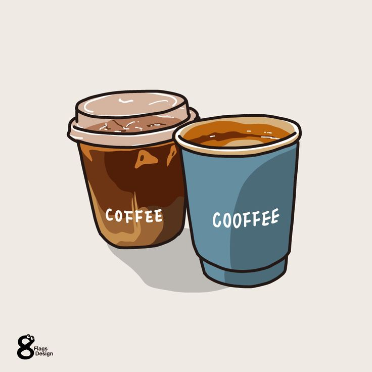
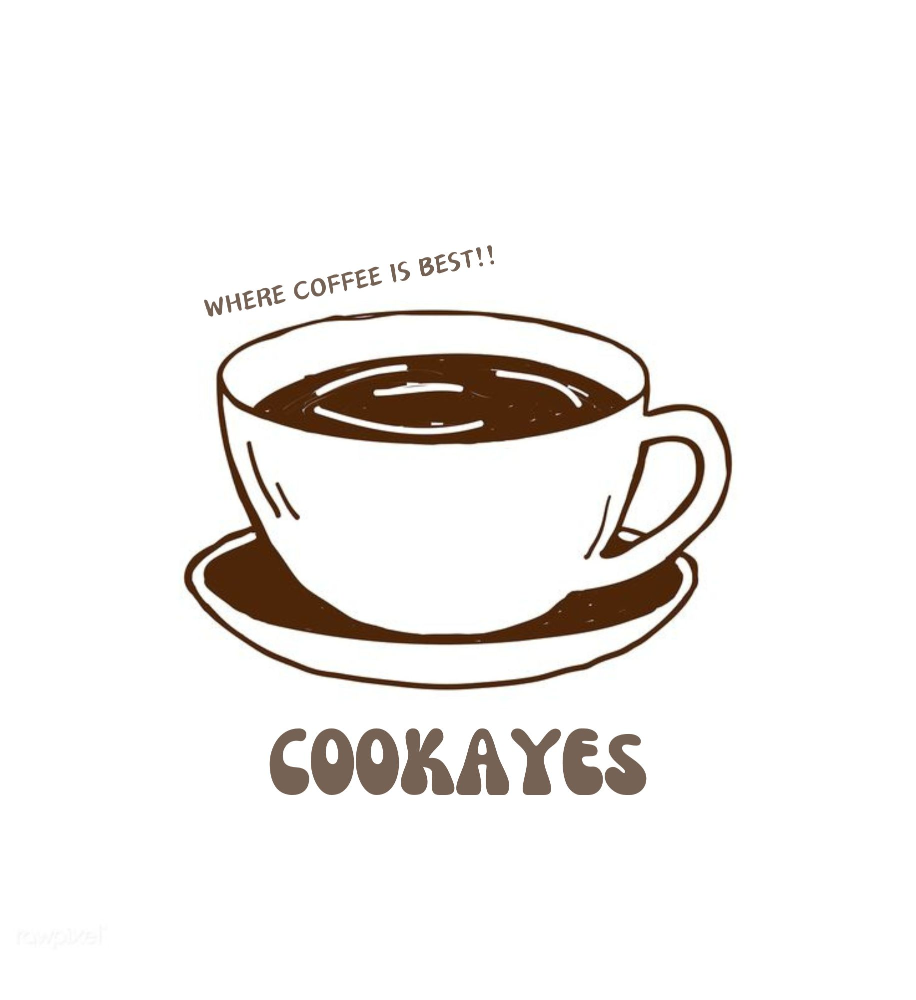

GRAB A CUP OF SOMETHING TASTY, AND BE LESS THIRSTY
Coffee is a beverage brewed from the roasted and ground seeds of the tropical evergreen coffee plant. Coffee is more than a beverage, however. It is a memory, an anticipation, a lifetime of consoling moments of modest pleasure woven into our lives. Coffee’s success as a beverage undoubtedly is owing both to the caffeine it harbors and to its sensory pleasure. Coffee lovers come to associate the energizing lift of the caffeine with the richness and aroma of the beverage that delivers it. Coffee is a major source of antioxidants in the diet, it has many health benefits.Our shop contains the perfect blend of coffee, delightful bakery treats, and delectable meals.